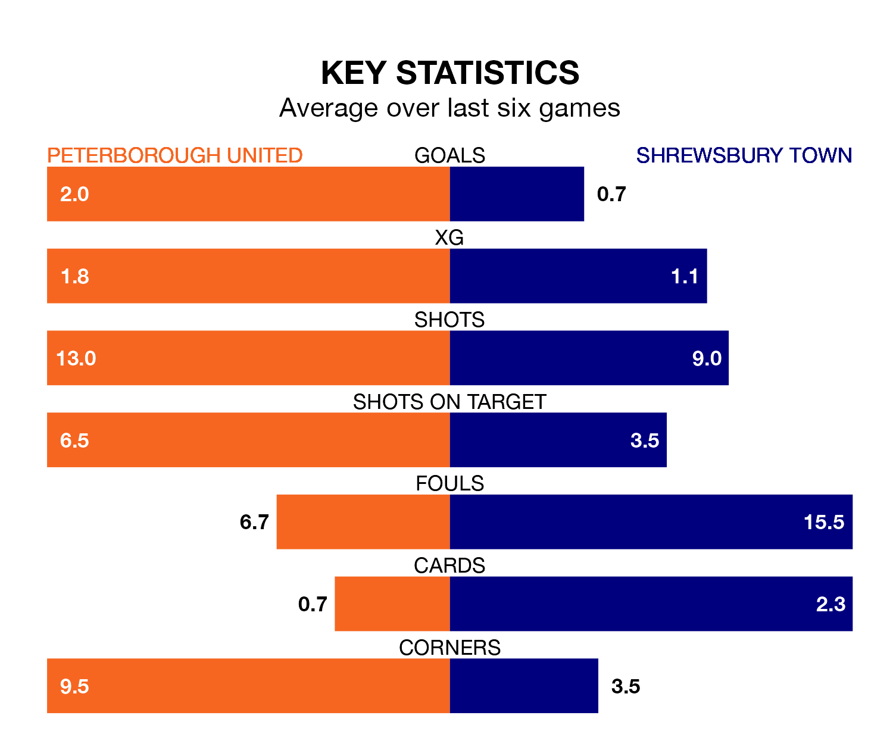

Peterborough United are heavy favourites to keep all three points at home in Saturday's kick-off against Shrewsbury Town.
The Posh, who sit third in EFL League One with 26 games played, are priced at 1.4 to seal victory at the Weston Homes Stadium.
Sitting 15 places and 22 points behind them in the table, Shrewsbury are 8.6 to win with *Betting Company*, while the draw is at 4.8.
With 52 goals in 26 games so far this season, Peterborough are the league's highest scorers with 2.0 goals per game. And they are conceding fewer than average, letting in 28 goals at a rate of 1.1 per game.
Shrewsbury, meanwhile, are below average scorers, with 0.6 goals per game, compared to a league average of 1.3. They have conceded 1.4 goals per game.
United are in good form in EFL League One, with four wins and two draws from their last six games.
With a win and five losses over that period, Town's form is much worse – they have taken three points from 18, compared to the Posh's 14.
In the last 10 years, Peterborough and Shrewsbury have played each other on 16 occasions. Peterborough won eight of them, Shrewsbury five, and they drew three times.
On average, the Posh scored 1.9 goals and the Shrews 1.5 in those matches.
Their last meeting was on December 23, when Peterborough won 2-1 away.
With Nicholas Bilokapic between the sticks, the home side can rely on one of the league's safest pair of hands. He has kept 10 clean sheets in his 24 appearances this season in EFL League One.
In the Shrews' net, Marko Maroši has seven clean sheets in 27 games. He has conceded a goal every 75 minutes, 30% more often than the 95 minutes between goals for Bilokapic.
Peterborough's last match was on January 13, a 2-1 win against Charlton Athletic, with Ephron Mason-Clark getting the goals for the Posh.
Shrewsbury lost 1-0 against Stevenage last time out, also on January 13.
Updated: 06:13 (UTC), 18/01/24